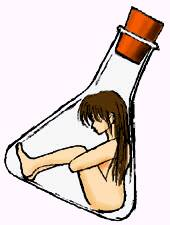

戻る
作：八重洲二世
画：紅葉
僕の名は、春日真一。二十二歳。
大学では、バイオテクノロジーを専攻している。
陰では、僕はマッドサイエンティストのように噂されているらしいが、何を隠そうその通りだったりする。
自分の部屋でクローン培養装置を完成させる人間がマッドサイエンティストでないと強弁するのは難しいだろう。
そう。
この数週間、文字通り心血をそそいで作り上げた培養装置がいま、僕の目の前にある。
西暦２０１５年現在、高等生物のクローンに関する基礎研究はほぼ完成の域に達しつつある。受精卵からしかクローンを作れなかった時代と違い、理論上は、髪の毛一本からだって、人間のコピーを作れるわけだ。
それなのに、世間ってやつは、愚にもつかない倫理だの人間の尊厳だのを持ち出してきて、クローン技術の応用を法規制してしまった。おかげで、せっかく人類が手に入れた至宝も完全に持ち腐れ状態だ。夢の未来を築くはずの技術が、せいぜい豚の品種改良程度に使われてしまってるというのも、つくづく嘆かわしい。
まあ、そんなことはどうでもいいんだ。
要は、僕が自力で培養装置を作り上げたってこと。
なぜそんなものを作ったかって？
決まってるじゃないか。
この装置で、僕だけの可愛い女の子を培養するんだ。
いわば、パーソナル女の子。

何をしようと、どんな風に扱おうと、誰にも文句を言われない。だって、そうだろう。僕がその女の子の造物主になるんだから。
うん、いよいよ我ながらマッドサイエンティストじみてきたな。
でも、本当はそれほど非道いことをするつもりもない。パーソナル女の子は大事に扱ってあげるつもり。……人権は認めないけど。
そもそも時子がいけない。「あなたのマッドさには、ついていけないわ。啓介さんは、私を大事にしてくれるの」って。
ったく、あのクソアマ。こう見えて僕は寂しがりやなんだぞ。だいたい僕がマッドサイエンティストなのを承知でつきあい始めたはずじゃないか。
ああ思い出しただけで腹が立つ。同じ学科の友人にぼやいたら「今までお前とつき合ってくれただけでも感謝するべきだ」だと。とはいえ、時子が去ったいま、マッドな僕とつき合ってくれる女の子など他にいないのも悲しいかな事実だ。
この憤懣やるかたない思いを、世界征服などに向けてみるのも一興だが、僕はどちらかというと内向的な性格だ。というわけで、世界征服はひとまずおあずけにしといて、パーソナル女の子の制作に邁進することにした……と、まあ、そういうわけだ。
装置の培養槽には、僕の細胞がセットしてある。口腔粘膜から採取した細胞だ。理論上は髪の毛でもいいはずだけど、紫外線などで細胞が傷ついてることが多く、技術的には困難だったりする。まあ、そんな話はどうでも良いんだけど。
最初はもちろん時子のクローンを作るつもりだった。
だけど、よく考えたら、何が悲しくてわざわざあんなブスをこの世にもう一匹誕生させなきゃいけないんだ。
……悪いが（うそ。ぜんぜん悪いと思ってない）、時子は顔が不自由なほうだ。それでもつき合ってたのは、ほかに僕なんかとつき合ってくれる酔狂な女がいなかったからだけど。それに、部屋に遊びに来てくれて、手料理とか作ってくれると、ブスはブスなりに可愛いやつだな、と思えてくることもあって……って、それはもう昔のことだ。
その点、僕のクローンだったら、少なくとも時子よりは可愛い女の子になるはずだ。そうそう、言い忘れていたが、性染色体ＸＹ、つまり男の細胞をクローン培養しても、ほうっておくと出来上がったクローン体は女になる。理論的な説明は面倒くさいので省くけど、要するに、生物の形態としては女の方がより自然だということ。
自慢じゃないが、僕はこう見えても、それなりに顔の造作は整ってる方だと思う。ナルシストと言われればそうかも知れないけど。でも、これは誰にも秘密なのだけど、僕の本棚には、高校時代の卒業記念アルバムが入ってる。あ、いや、これ自体は別に秘密なんかじゃない。そうじゃなくて、このアルバムは、机の上に背を置くと、ある箇所に開きグセがついてて、自然とそのページで左右に分かれるんだ。そのページには……とびきりの美少女がいる。つまりは、高校時代、文化祭のクラス演劇で、むりやり女装させられたときの僕の写真。いまでこそ、無精ひげとぼさぼさ髪でいかにもマッドサイエンティストな僕だけど、この写真に映っている僕は、はっとするほど、その、可愛い、と思う。こういうことを言うと、僕が女装願望があるみたいだけど、別に女の服を見て町を歩きたいとか思ったことは一度もない。ただ、この写真だけは何か心にひっかかってて、ときどきアルバムを引っぱり出しては、しげしげと見入ってたりしてたわけだ。
変態、と笑わば笑え、こちとらはどうせマッドサイエンティストだ。怖いものなんて、ない。
……話がそれた。
とにかく、培養槽には、僕の細胞がセットしてある。性別設定は「女性」。加齢設定は「十六歳」に合わせてある。
しかも、念には念を入れて、クローンの細胞にはアポトーシス・プログラムが組み込まれるようになっている。これは、定期的に僕（つまりクローンのオリジナル）の生殖細胞を取り込まないと、クローンの細胞が自己崩壊を起こすようなプログラム。早い話が、クローンは、一生、僕なしでは生きていけないわけ。
これから出来上がるはずのクローンは、遺伝子的にも僕のパーソナルだ。誰にも文句を言われる筋合いはない。正体不明の生命倫理とやらは、僕がいずれ世界征服でもしてこの世から根絶するつもりだ。
さて、それではいよいよ、培養スイッチをオンにして、と。
……これでよし。
丸一昼夜で、完全なクローンが出来上がるはずだ。
でも、その前にもうひとつやっておかなきゃいけないことがある。
せっかくパーソナル女の子が完成しても、そのままじゃ「中身」がない。つまり、体は一人前の女の子でも、頭はからっぽということになる。培養槽を開けたら、中で白痴の女の子がうすら笑いを浮かべて涎を垂らしていた、なんてぞっとしない。
そうならないためにも、クローンの脳に僕の記憶をコピーしてやる必要がある。
僕は、小型の“ｆ−ＳＱＵＩＤ”と呼ばれる双方向型ニューロ・スキャナーを取り出した。
スキャナーに記録ディスクをセットする。
このディスクに僕の全記憶をコピーするわけだ。
そうしたら、ディスクを培養装置と接続された端末にセットすることで、自動的にクローンの培養段階に合わせて記憶情報がクローンの脳に転送されるようになっている。我ながら、完璧なシステムだ。
スキャナーの読みとり部（これはヘッドフォンみたいな形をしてる）を頭部に装着する。
スキャン開始のボタンを押すと、僕は静かに目を閉じた。
ディスクが回転を始めた。コピーが開始されて、膨大な記憶情報が書き込まれているところだ。
＊ ＊ ＊ ＊ ＊
……いつの間にか、横になっていたみたいだ。
体がだるい。奇妙な脱力感。
それに……
ここはどこだろう。
僕は、記憶のスキャンをしていたはずなのに。
どうして僕はこんなに狭苦しいカプセルの中に押し込められているんだろう？
カプセル?!
突然、半透明のカプセルの向こうに人影が近づいた。
人影がカプセルの外側でなにやらカチャカチャと操作をすると、カプセルの壁が外に向けてぱくっと開いた。
外気が流れ込んで、ひやりとした。
おかしい。裸にでもなったみたいだ。
そう意識したとたん、気がついた。体がべとべとしてる。なにかドロリとした液体が体中にまとわりついてる。
僕はあわてて体を起こした。
自分では「がばっ」と跳ね起きるつもりだったのに、実際には、脱力感に抗ってゆっくりと上体を起こすのが精一杯だった。
僕はカプセルの外を観察した。僕はどこにいるんだ。
だけど、何のことはない、ここは僕の部屋だった。
壁も机も、椅子もベッドも、全部見覚えがある。間違いない。ここは、僕の部屋だ。
その証拠にほら、ここには僕がいる……。
僕の視界には、僕が映っていた。鏡の中に見慣れた、無精ひげとぼさぼさ頭の僕が。
僕が……。
……。
？
じゃあ、この僕はなんなんだ？
そのとき、もう一人の僕が口を開いた。
「成功だ！」
そして、明るい笑顔で僕に向かってこう言った。
「君は、僕のパーソナル女の子なんだよ。……これから色々とヨロシクね」
反射的に、相手を突き飛ばそうとして僕は（のろのろと）手をあげた。
そのとき、上腕の皮膚が、なにかやわらかいものと擦れ合った。同時に、胸のあたりに不思議な圧迫感（むにゅ）があった。
「えっ……」
思わずあげた小さな声に、もう一人の僕が満足そうに微笑んだ……。
（完）
マイ・ピュア・クローンドール２『恥辱調教編』（笑）へと続く、かも。
戻る